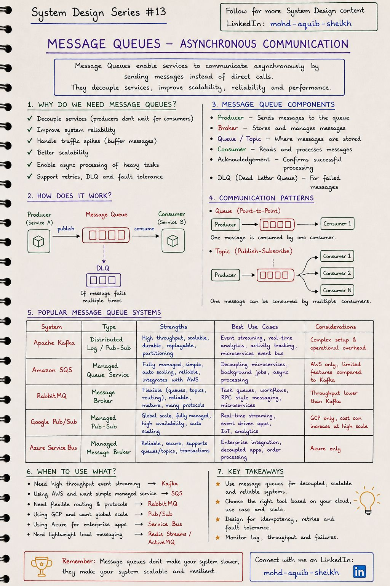
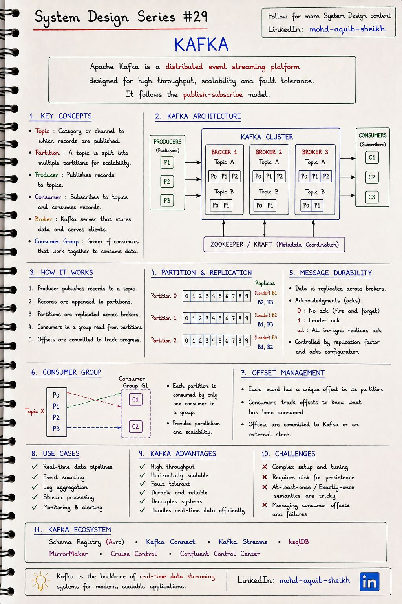
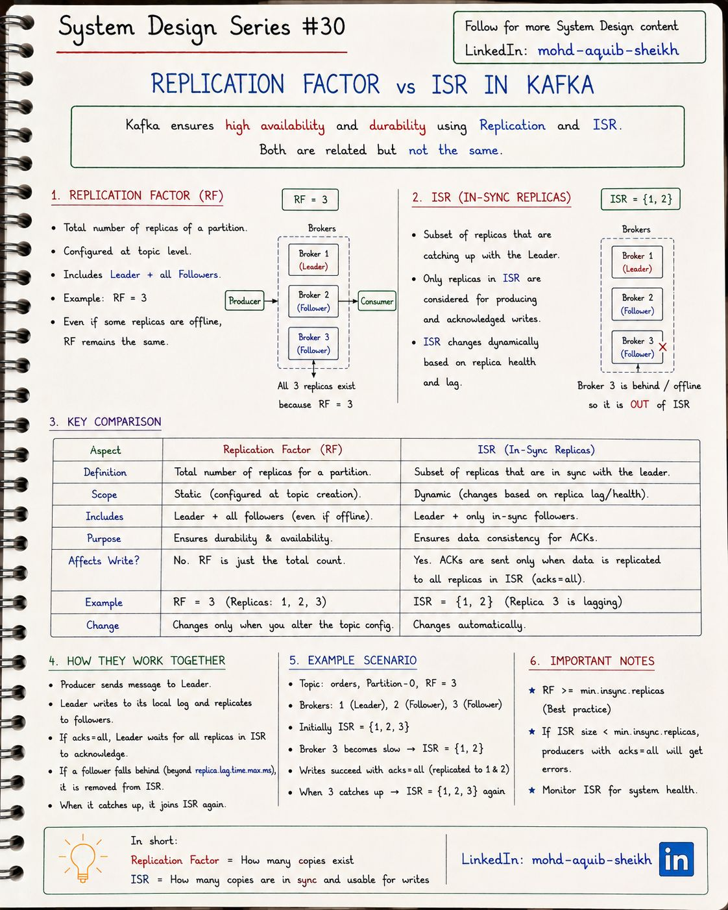
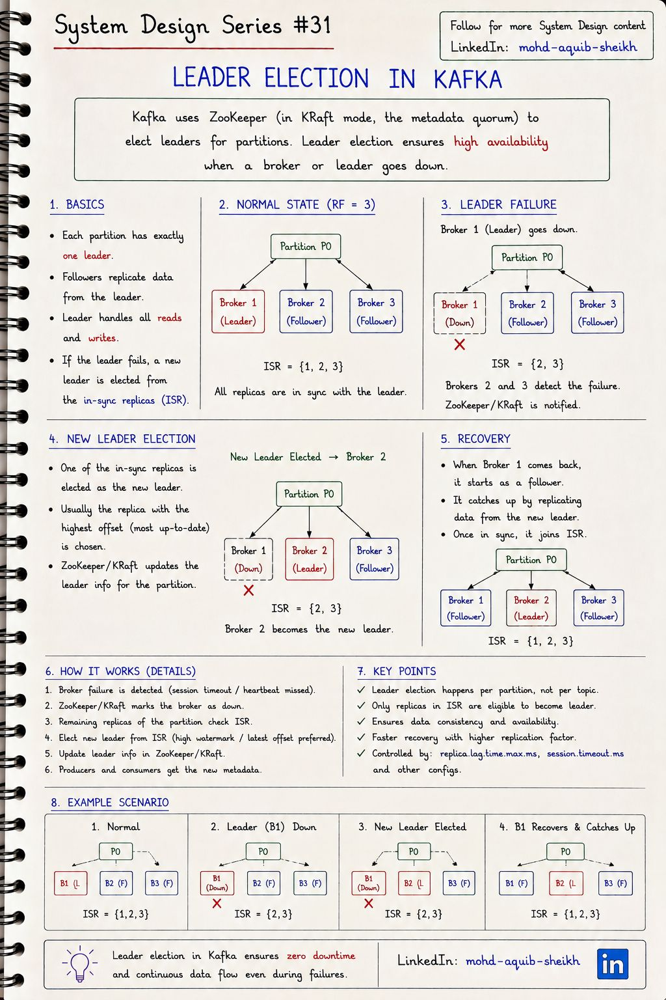

Очереди сообщений и Kafka
Асинхронное взаимодействие развязывает сервисы во времени: отправитель не ждёт получателя. Глава начинается с общей идеи очередей и переходит к устройству Kafka — топики, партиции, реплики, ISR и выборы лидера. На этом фундаменте стоят две следующие главы.
12.1Очереди сообщений#13
Сервис-отправитель (producer) кладёт сообщение в брокер и сразу продолжает работу; сервис-получатель (consumer) забирает его, когда готов. Между ними нет прямого вызова — значит, получатель может быть медленным, перегруженным или временно выключенным, и отправитель этого не заметит.


Что даёт очередь
- Развязка: отправитель не знает о получателях.
- Буфер: всплеск нагрузки превращается в отставание, а не в отказ.
- Надёжность: сообщение дождётся получателя; неудачные — повторяются.
- Масштабирование: добавить потребителей, не трогая отправителя.
Чем за это платят
- Результат не сразу — согласованность в конечном счёте.
- Ещё один компонент, который нужно эксплуатировать.
- Дубликаты и перестановка порядка — обработчик должен их выдерживать.
- Отладка сложнее: нет единого стека вызовов.
| Шаблон | Кто получает сообщение | Пример |
|---|---|---|
| Очередь (point-to-point) | Ровно один из потребителей | Задачи для воркеров: обработать изображение, отправить письмо |
| Топик (publish-subscribe) | Каждый подписчик получает свою копию | Событие «заказ создан» → склад, уведомления, аналитика |
- Классическая очередь (RabbitMQ, SQS, ActiveMQ): брокер отслеживает состояние каждого сообщения и удаляет его после подтверждения. Гибкая маршрутизация, приоритеты, отложенные сообщения. Прочитанное нельзя перечитать.
- Журнал (Kafka, Pulsar, Redis Streams): сообщения дописываются в неизменяемый лог и хранятся заданное время независимо от чтения. Потребитель сам помнит свою позицию (offset). Можно перечитать историю, подключить нового читателя к старым событиям, восстановить состояние.
Dead Letter Queue (DLQ) — отдельная очередь для сообщений, которые не удалось обработать после нескольких попыток. Она не даёт «ядовитому» сообщению бесконечно блокировать обработку остальных. Подробно — в теме 14.
12.2Kafka: архитектура#29
Apache Kafka — распределённая платформа потоковой передачи событий. В её основе одна простая структура: упорядоченный журнал, в который можно только дописывать, разбитый на части и скопированный на несколько серверов.


| Понятие | Что это | Что важно помнить |
|---|---|---|
| Topic | Именованный поток записей | Логическая единица; физически — набор партиций |
| Partition | Отдельный упорядоченный журнал | Единица параллелизма и порядка. Порядок гарантирован только внутри партиции |
| Offset | Порядковый номер записи в партиции | Позиция потребителя — это просто число |
| Broker | Сервер Kafka | Хранит партиции на диске, обслуживает клиентов |
| Producer | Пишет записи в топик | Сам выбирает партицию: hash(key) % N или равномерно, если ключа нет |
| Consumer group | Набор потребителей, делящих работу | Каждая партиция читается одним потребителем группы; разные группы читают независимо |
orderId придут потребителю по порядку: «создан → оплачен → отправлен». События разных заказов могут обрабатываться параллельно и в любом взаимном порядке. Глобального порядка по топику с несколькими партициями не существует.
- ZooKeeper больше не используется. На схеме указано «ZooKeeper / KRaft». В режиме KRaft метаданные хранит кворум контроллеров внутри самой Kafka (протокол Raft). В Kafka 4.0 режим ZooKeeper удалён окончательно; новые кластеры — только KRaft.
- Потребитель сам забирает данные (pull), а не получает их от брокера. Поэтому медленный потребитель не перегружается — он просто отстаёт, и это отставание (consumer lag) является главной метрикой здоровья.
- Смещения группы хранятся в самой Kafka — во внутреннем топике
__consumer_offsets. - Чтение не удаляет записи. Срок хранения задаётся временем или размером (
retention.ms,retention.bytes); для топиков-справочников есть сжатие лога (log compaction) — остаётся последняя запись по каждому ключу. - Число партиций можно только увеличивать, и при увеличении ключи перераспределяются — порядок по ключу на время нарушается. Число партиций закладывают с запасом.
Почему Kafka быстрая: последовательная запись на диск (быстрее случайной на порядки), кэш страниц ОС вместо собственного, передача данных с диска в сеть без копирования в память приложения (zero-copy), пакетная отправка и сжатие на стороне продюсера.
12.3Replication Factor и ISR#30
Каждая партиция хранится в нескольких копиях на разных брокерах. Replication factor (RF) — сколько копий должно быть. In-Sync Replicas (ISR) — сколько копий сейчас актуальны. Первое — статическая настройка, второе — динамическое состояние.


- Одна из реплик — лидер: через неё идёт запись. Остальные — фолловеры, они непрерывно забирают данные у лидера.
- Фолловер, не догоняющий лидера дольше
replica.lag.time.max.ms(по умолчанию 30 секунд), исключается из ISR. Догнал — возвращается. - Потребители видят запись только после того, как её получили все реплики из ISR. Эта граница называется high watermark.
Три настройки, которые определяют надёжность
| Настройка | Где | Смысл |
|---|---|---|
replication.factor | топик | Число копий партиции |
min.insync.replicas | топик / брокер | Минимальный размер ISR, при котором лидер принимает запись с acks=all |
acks | продюсер | 0 — не ждать; 1 — подтверждение лидера; all — подтверждение всех реплик из ISR |
| Сценарий при RF = 3, min.insync.replicas = 2, acks = all | ISR | Запись | Чтение |
|---|---|---|---|
| Все брокеры работают | {1, 2, 3} | да | да |
| Один брокер отстал или упал | {1, 2} | да | да |
| Два брокера недоступны | {1} | нет — NotEnoughReplicasException | да |
acks=all означает «все реплики из ISR», а не «все три». Если ISR сократился до одного лидера, а min.insync.replicas = 1 (значение по умолчанию), запись подтверждается одной копией — и отказ этого брокера потеряет подтверждённые данные. Стандартная надёжная конфигурация: RF = 3, min.insync.replicas = 2, acks = all — переживает отказ одного брокера без потери данных и без остановки записи. Ставить min.insync.replicas = RF нельзя: любой перезапуск брокера остановит запись.
12.4Выборы лидера партиции#31
У каждой партиции в каждый момент ровно один лидер. Когда брокер с лидером выходит из строя, новый лидер назначается из числа реплик ISR, клиенты получают обновлённые метаданные и продолжают работу. Для приложения это выглядит как несколько секунд повторных попыток.


- Обнаружение. Брокер перестал отправлять heartbeat контроллеру — по истечении таймаута сессии он считается недоступным.
- Выбор. Контроллер для каждой партиции, лидером которой был упавший брокер, назначает нового лидера из ISR.
- Распространение. Новые метаданные расходятся по брокерам; продюсеры и потребители, получив ошибку «не лидер», запрашивают метаданные заново.
- Восстановление. Вернувшийся брокер становится фолловером, отбрасывает записи, которых нет у нового лидера, догоняет его и возвращается в ISR.
- Выбирает не ZooKeeper, а контроллер. Раньше контроллером был один из брокеров (ZooKeeper лишь помогал определить, какой именно, и хранил метаданные). В KRaft контроллер — лидер Raft-кворума.
- «Реплика с наибольшим смещением» — не критерий. Контроллер берёт первую живую реплику из списка назначенных, входящую в ISR. Сравнивать смещения не нужно: все реплики ISR по определению содержат всё до high watermark, то есть все подтверждённые записи.
- «Лидер обслуживает все чтения» — уже не всегда. Потребители могут читать с ближайшей реплики (
client.rack+replica.selector.class) — это экономит трафик между зонами. session.timeout.ms, упомянутый в ключевых пунктах, — настройка потребителя. Обнаружением отказа брокера управляетbroker.session.timeout.ms.
unclean.leader.election.enable=false (по умолчанию) партиция остаётся недоступной, пока не вернётся реплика из ISR, — данные целы. При true лидером станет отставшая реплика: партиция доступна, но подтверждённые записи, которых у неё не было, потеряны навсегда. Это выбор между C и A из CAP, вынесенный в одну настройку. Для платежей — false, для метрик и логов иногда допустимо true.
12.5Интерактив: ключ, партиция и порядок сообщений
Попробуйте: отправьте по несколько сообщений каждого пользователя — цвет показывает ключ, и видно, что ключ «живёт» в одной партиции. Затем добавьте партицию и отправьте ещё.
12.6Самопроверка
Где Kafka гарантирует порядок сообщений?
- Во всём топике
- Только внутри одной партиции
- Между всеми топиками
- Нигде
replication.factor = 3, min.insync.replicas = 2, acks = all. Упали две реплики из трёх. Что будет с записью?
- Продолжится как обычно
- Сообщения будут теряться
- Продюсер получит NotEnoughReplicasException: запись остановлена ради сохранности, чтение продолжается
- Топик удалится
Чем Kafka принципиально отличается от классической очереди (RabbitMQ)?
- Это журнал: сообщения не удаляются при чтении, каждый потребитель хранит свою позицию и может перечитать историю
- Kafka не хранит сообщения на диске
- В Kafka нет потребителей
- Ничем
Чем журнал Kafka принципиально отличается от очереди RabbitMQ?
В очереди брокер хранит состояние каждого сообщения и удаляет его после подтверждения; сообщение достаётся одному получателю. В журнале записи неизменяемы и хранятся по сроку независимо от чтения; позицию хранит потребитель, поэтому можно иметь много независимых групп читателей, перечитывать историю и подключать новых читателей к старым данным.
Как обеспечить, чтобы события одного заказа обрабатывались строго по порядку?
Отправлять их с одинаковым ключом (orderId) — они попадут в одну партицию, где порядок гарантирован, и будут прочитаны одним потребителем группы. Дополнительно: включённая идемпотентность продюсера сохраняет порядок при повторах отправки, а обработка внутри потребителя не должна распараллеливать записи одной партиции без учёта ключа.
RF = 3, min.insync.replicas = 2, acks = all. Сколько брокеров можно потерять без потери данных? А без остановки записи?
Без остановки записи — один: ISR из двух реплик удовлетворяет минимуму. При потере двух запись останавливается с ошибкой, но подтверждённые данные целы на оставшейся реплике (каждая подтверждённая запись была минимум на двух). Потеря данных возможна только при утрате всех реплик, содержащих запись.
Почему acks=all не гарантирует сохранность при min.insync.replicas = 1?
all означает все реплики из текущего ISR. Если фолловеры отстали и были исключены, ISR состоит из одного лидера — и его подтверждения достаточно. Запись существует в одной копии; отказ этого брокера её уничтожит. min.insync.replicas задаёт нижнюю границу размера ISR, при которой запись вообще принимается.
Что произойдёт при включённом unclean leader election и почему он выключен по умолчанию?
Если все реплики ISR недоступны, лидером станет отставшая реплика, не содержащая части подтверждённых записей. Они будут потеряны, а вернувшиеся реплики отбросят «лишние» данные, чтобы сравняться с новым лидером. По умолчанию выключено, потому что Kafka предпочитает недоступность партиции молчаливой потере данных.